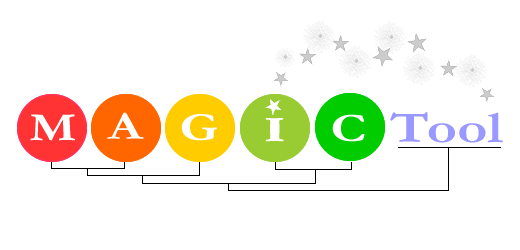

MAGIC Tool v.2.0
June 27, 2007
For more documentation, visit the MAGIC Tool Website at http://www.bio.davidson.edu/MAGIC
Flash tutorials are available at http://www.bio.davidson.edu/projects/magic/tutorials/MTUG.htm